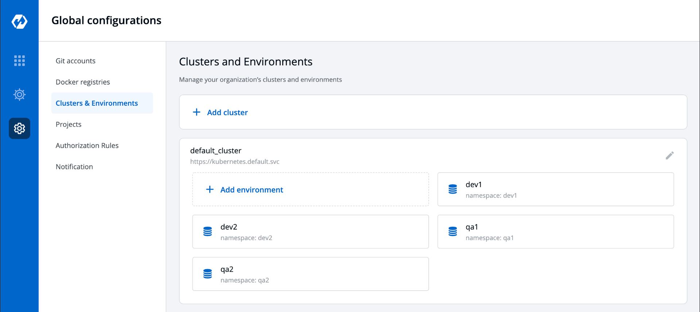

Namespaces And Environments
Namespaces
Kubernetes namespaces can be seen as a logical entity used to represent cluster resources for usage of a particular set of users. This logical entity can also be termed as a virtual cluster. One physical cluster can be represented as a set of multiple such virtual clusters (namespaces).
Multiple Namespaces
Namespaces are intended for use in environments with many users spread across multiple teams, or projects. Names of resources need to be unique within a namespace, but not across namespaces. Namespaces can not be nested inside one another and each Kubernetes resource can only be in one namespace
Environments
One of the advantages that Kubernetes provides is the ability to manage various environments easier and better than traditional deployment strategies. For most nontrivial applications, you have test, staging, and production environments. You can spin up a separate cluster of resources, such as VMs, with the same configuration in staging and production, but that can be costly and managing the differences between the environments can be difficult. Kubernetes includes a cool feature called namespaces, which enables you to manage different environments within the same cluster. For example, you can have different test and staging environments in the same cluster of machines, potentially saving resources.
Environments in Devtron can be accessed from:-
Global Configuration->Clusters & Environments

Here multiple environments can be created